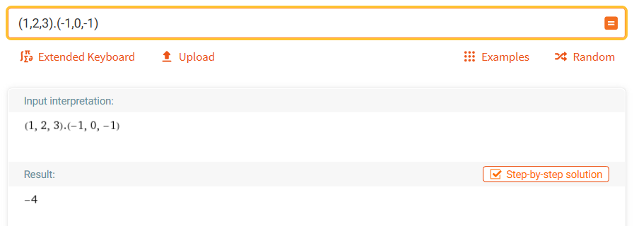
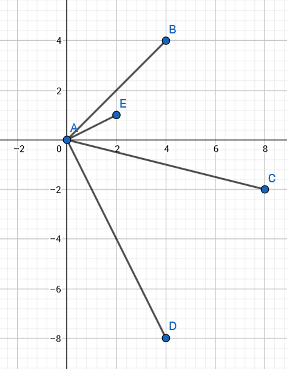
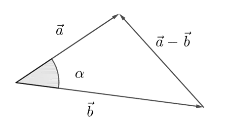

Pistetulo
Contents
Pistetulo#
Pistetulon avulla voidaan selvittää vektorien välisiä kulmia, ja sitä tarvitaan myös myöhemmin matriisien laskutoimituksissa. Vektorien \(\vec{a}\) ja \(\vec{b}\) pistetulossa \(\vec{a}\cdot\vec{b}\) vektorien samojen komponenttien kertoimet kerrotaan keskenään, ja tulot lasketaan yhteen.
Pistetulon tuloksena on aina luku, ei vektori. Pistetulon toinen nimi, skalaaritulo, korostaakin juuri sitä että tulos on skalaariarvoinen eli luku. Pistetulo merkitään laskuihin pisteellä \(\cdot\). Rasti \(\times\) on varattu toiseen laskutoimitukseen.
Laskukaava: Jos \(\vec{a}=a_x \vec{i}+a_y \vec{j}+a_z \vec{k}\) ja \(\vec{b}=b_x \vec{i}+b_y \vec{j}+b_z \vec{k}\), niin \(\vec{a}\cdot\vec{b}=a_x b_x+a_y b_y+a_z b_z\).
Pistetulon voi laskea WolframAlphalla merkitsemällä vektorien komponenttien kertoimet sulkuihin ja kirjoittamalla vektorien väliin pisteen, kuten kuvassa.

Pistetulo ja kohtisuoruus#
Jos vektorien pistetulo on nolla, vektorit ovat toisiaan vastaan kohtisuorassa. Perustelu tähän saadaan hieman myöhemmin pistetulon toisen määritelmän avulla. Sääntö toimii myös kolmiulotteisen koordinaatiston vektoreille.
Esim. Laske kuvan vektorien väliset pistetulot. Ovatko annetut vektorit kohtisuorassa toisiaan vastaan?

a) \(\vec{AB}=4\vec{i}+4\vec{j}\) ja \(\vec{AC}=8\vec{i}-2\vec{j}\)
b) \(\vec{AD}=4\vec{i}-8\vec{j}\) ja \(\vec{AE}=2\vec{i}+\vec{j}\)
Ratkaisu
a) Pistetulo on \(4\cdot 8+4\cdot (-2)=32-8=24\). Vektorit eivät ole toisiaan vastaan kohtisuorassa.
b) Pistetulo on \(4\cdot 2-8\cdot 1=0\). Vektorit ovat toisiaan vastaan kohtisuorassa.
Esim. Laske vektorien \(\vec{a}\) ja \(\vec{b}\) pistetulo. Ovatko vektorit kohtisuorassa toisiaan vastaan?
a) \(\vec{a}=2\vec{i}+6\vec{j}, \vec{b}=-3\vec{i}-\vec{j}\)
b) \(\vec{a}=7\vec{i}-\vec{j}, \vec{b}=2\vec{j}+\vec{k}\)
c) \(\vec{a}=2\vec{i}-3\vec{j}+\vec{k}, \vec{b}=4\vec{i}+\vec{j}-\vec{k}\)
Ratkaisu
a) \(\vec{a}\cdot \vec{b}=2\cdot (-3)+6\cdot (-1)=-6-6=-12 \neq 0\), joten eivät ole kohtisuorassa.
b) \(\vec{a}\cdot \vec{b}=7\cdot 0+(-1)\cdot 2+0\cdot 1=-2 \neq 0\), joten eivät ole kohtisuorassa.
c) \(\vec{a}\cdot \vec{b}=2\cdot 4+(-3)\cdot 1+1\cdot (-1)=0\), joten \(\vec{a} \perp \vec{b}\).
Esim. Mikä tulee luvun \(s\) olla, jotta vektorit \(\vec{a}\) ja \(\vec{b}\) olisivat kohtisuorassa toisiaan vastaan?
a) \(\vec{a}=100 \vec{i}+75\vec{j}\) ja \(\vec{b}=s\vec{i}-2\vec{j}\)
b) \(\vec{a}=\vec{i}+2\vec{j}+\vec{k}\) ja \(\vec{b}=s\vec{i}+\vec{j}-\vec{k}\)
Ratkaisu
a) Pistetulo on \(\vec{a}\cdot \vec{b}=100\cdot s+75\cdot (-2)=100s-150\). Koska toisiaan vastaan kohtisuorien vektorien pistetulo on nolla, niin ratkaistaan yhtälö \(100s-150=0\). Tästä saadaan helposti \(s=1.5\).
b) Pistetulo on \(\vec{a}\cdot \vec{b}=1\cdot s+2\cdot 1+1\cdot (-1)=s+1\), joten tulee olla \(s+1=0\) eli \(s=-1\).
Vektorien välinen kulma#
Vektorien pistetulolle on olemassa myös ns. geometrinen määritelmä \(\vec{a}\cdot \vec{b}=|\vec{a}||\vec{b}| \cos{\alpha}\), missä \(\alpha\) on vektorien \(\vec{a}\) ja \(\vec{b}\) välinen kulma. Kaavan voi perustella kosinilauseen avulla.
Kaavan perustelu

Kuvan kolmiossa kulman \(\alpha\) kyljet ovat vektorit \(\vec{a}\) ja \(\vec{b}\). Kulmaa vastapäätä oleva sivu saadaan esitettyä näillä vektoreilla muodossa \(\vec{a}-\vec{b}\). Kolmion sivujen pituudet ovat näiden vektorien avulla ilmaistuna \(|\vec{a}|\), \(|\vec{b}|\) ja \(|\vec{a}-\vec{b}|\). Kirjoitetaan näitä merkintöjä käyttäen kosinilause:
\(|\vec{a}-\vec{b}|^2 =|\vec{a}|^2 + |\vec{b}|^2 - 2 |\vec{a}| |\vec{b}| \text{cos}~\alpha\)
Seuraavaksi johdetaan toinen esitysmuoto yhtälön vasemmalle puolelle \(|\vec{a}-\vec{b}|^2\). Esitetään vektorit kantavektorien avulla, siis \(\vec{a}=a_x \vec{i} + a_y \vec{j} + a_z \vec{k}\) ja \(\vec{b}=b_x \vec{i} + b_y \vec{j} + b_z \vec{k}\).
Vektorien erotus on tällöin \(\vec{a}-\vec{b}=(a_x-b_x) \vec{i} + (a_y-b_y) \vec{j} + (a_z-b_z) \vec{k}\). Tämän vektorin pituuden toinen potenssi on \(|\vec{a}-\vec{b}| = (a_x-b_x)^2 + (a_y-b_y)^2 + (a_z-b_z)^2\). Oikea puoli voidaan potenssilukujen laskusääntöjen mukaisesti sieventää seuraavasti:
\((a_x-b_x)^2 + (a_y-b_y)^2 + (a_z-b_z)^2 = \dots \)
\( = a_x^2-2 a_x b_x + b_x^2 + a_y^2-2 a_y b_y + b_y^2 + a_z^2 + 2 a_z b_z + b_z^2\)
Järjestellään oikean puolen termejä:
\((a_x-b_x)^2 + (a_y-b_y)^2 + (a_z-b_z)^2 = \dots \)
\( = a_x^2+a_y^2+a_z^2 + b_x^2 + b_y ^2 + b_z^2 - 2a_x b_x -2 a_y b_y -2 a_z b_z\)
Huomataan, että oikealta puolelta löytyy vektorien pituuksien neliöt:
\((a_x-b_x)^2 + (a_y-b_y)^2 + (a_z-b_z)^2 = |\vec{a}|^2 + |\vec{b}|^2 - 2a_x b_x -2 a_y b_y -2 a_z b_z\)
Yhtälön oikean puolen viimeiset termit voidaan ryhmitellä seuraavasti:
\((a_x-b_x)^2 + (a_y-b_y)^2 + (a_z-b_z)^2 = |\vec{a}|^2 + |\vec{b}|^2 - 2(a_x b_x+ a_y b_y + a_z b_z)\)
eli pistetulon määritelmän mukaan
\((a_x-b_x)^2 + (a_y-b_y)^2 + (a_z-b_z)^2 = |\vec{a}|^2 + |\vec{b}|^2 - 2 \vec{a} \cdot \vec{b}\)
Saatiin siis tulos:
\(|\vec{a}-\vec{b}|^2 = |\vec{a}|^2 + |\vec{b}|^2 - 2 \vec{a} \cdot \vec{b}\)
Näin ollen kosinilauseen voi kirjoittaa muodossa:
\(|\vec{a}|^2 + |\vec{b}|^2 - 2 \vec{a} \cdot \vec{b} = |\vec{a}|^2 + |\vec{b}|^2 - 2 |\vec{a}| |\vec{b}| \text{cos}~\alpha\)
Tämä sievenee muotoon
\( \vec{a} \cdot \vec{b} = |\vec{a}| |\vec{b}| \text{cos}~\alpha\)
Esim.
a) Vektorin \(\vec{a}\) pituus on 65 ja vektorin \(\vec{b}\) pituus on 20. Vektorien välinen kulma on 30 astetta. Mikä on vektorien \(\vec{a}\) ja \(\vec{b}\) pistetulo?
b) Vektorin \(\vec{a}\) pituus on 12 ja vektorin \(\vec{b}\) pituus on 4. Vektorien \(\vec{a}\) ja \(\vec{b}\) pistetulo on 16. Mikä on vektorien \(\vec{a}\) ja \(\vec{b}\) välinen kulma?
Ratkaisu
a) \(\vec{a}\cdot \vec{b}=|\vec{a}||\vec{b}| \cos{\alpha} = 65\cdot 20 \cdot \cos{30^{\circ}} \approx 1125.83\)
b) Pistetulon geometrisesta määritelmästä saadaan ratkaistua: \(\cos{\alpha} = \frac{\vec{a}\cdot \vec{b}}{|\vec{a}||\vec{b}|}\), joten tässä tapauksessa kulman kosini on \(\cos{\alpha} = \frac{16}{2\cdot 4}=\frac{16}{48}=\frac{1}{3}\). Kulmaksi saadaan \(\alpha = \arccos{\frac{1}{3}} \approx 70.53^{\circ}\).
Esim. Laske vektorien \(\vec{a}\) ja \(\vec{b}\) välinen kulma, kun vektorit ovat seuraavat:
a) \(\vec{a}=31 \vec{i}-26\vec{j},\vec{b}=91\vec{i}+42\vec{j}\),
b) \(\vec{a}=3\vec{i}-\vec{j}+7\vec{k}, \vec{b}=-3\vec{i}+4\vec{j}+2\vec{k}\).
Ratkaisu
a) \(\cos{\alpha} = \frac{31\cdot 91-26\cdot 42}{\sqrt{31^2+91^2}\sqrt{(-26)^2+42^2}} \approx 0.426\), joten \(\alpha=\arccos{0.426} \approx 64.8^{\circ}\).
Ratkaisu WolframAlphalla: angle between [31,-26],[91,42] tai (31*91-26*42)/(sqrt(31^2+26^2)*sqrt(91^2+42^2))
b) \(\cos{\alpha} = \frac{(3\cdot (-3)-1\cdot 4+7\cdot 2}{\sqrt{3^2+(-1)^2+7^2}\sqrt{(-3)^2+4^2+2^2}}\approx 0.0242\), joten \(\alpha =\arccos{0.0242} \approx 88.6^{\circ}\).
Ratkaisu WolframAlphalla: angle between [3,-1,7],[-3,4,2] tai (3*(-3)-1*4+7*\2)/(sqrt(3^2+1^2+7^2)*sqrt((-3)^2+4^2+2^2))
Esim. Tie haarautuu pisteessä (150,200) kahdeksi suoraksi tieksi siten, että toinen haara päätyy pisteeseen (220,350) ja toinen pisteeseen (240,100).
a) Muodosta kaksi vektoria, jotka kuvaavat risteyksestä lähteviä teitä.
b) Laske pistetulon avulla teiden välinen kulma.
Ratkaisu
Vektorit ovat \((220-150) \vec{i}+(350-200) \vec{j}=70 \vec{i}+150 \vec{j}\) ja \((240-150) \vec{i} +(100-200) \vec{j}=90 \vec{i}-100\vec{j}\).
Kulman kosini on \(\cos{\alpha}=\frac{70\cdot 90+150\cdot (-100}{\sqrt{70^2+150^2}\sqrt{90^2+(-100)^2}} \approx -0.391\), joten kulmaksi saadaan \(\alpha = \arccos{-0.391} = 113^{\circ}\).